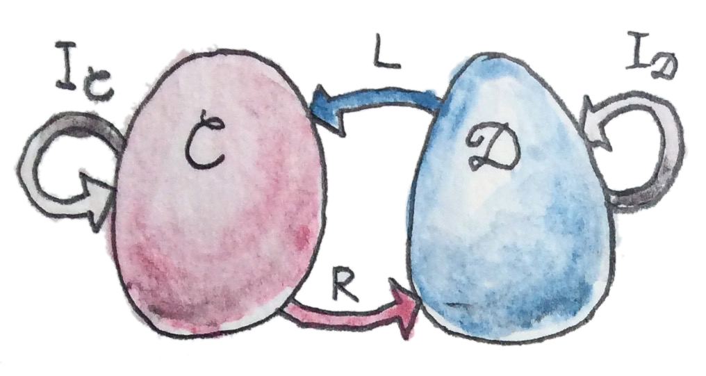
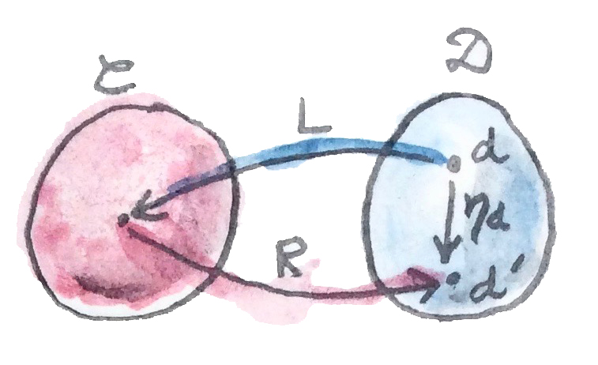
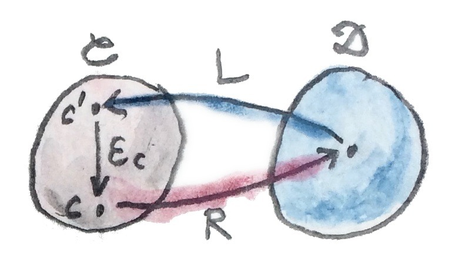
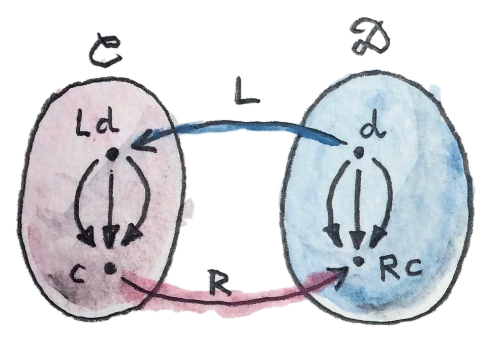
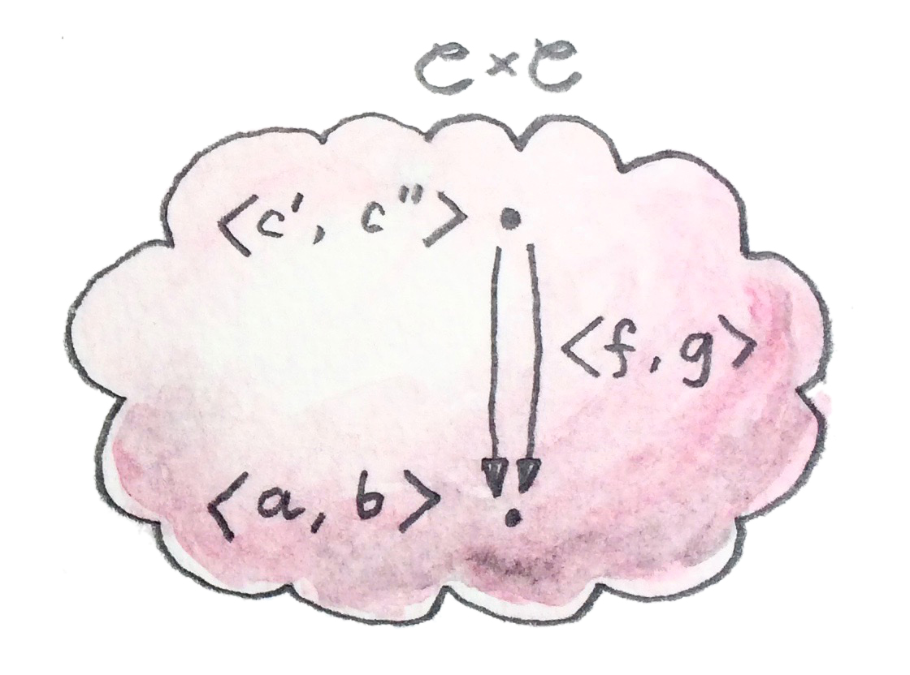
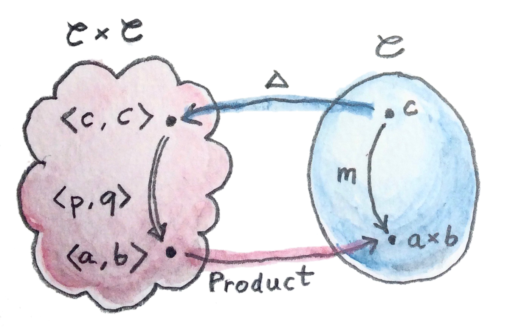
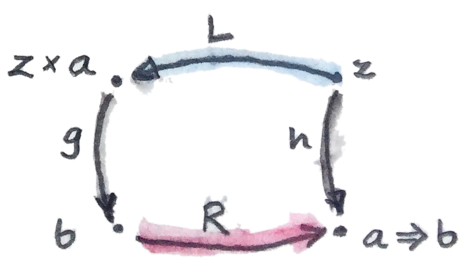

数学中有多种方式表达一个事物与另一个相像。最严格的是相等（equality）。两个事物相等，意味着没有任何办法把它们区分开；在所有可以想象的语境中，一个都能替换另一个。例如，你是否注意到，每次讨论交换图时，我们都使用态射的相等？这是因为态射组成集合（Hom 集），而集合元素可以比较是否相等。
但相等往往过强。许多事物实际上并不相等，却在所有实际意义上都相同。例如，二元组类型 (Bool, Char) 并不严格等于 (Char, Bool)，但我们知道它们包含相同信息。两个类型之间的同构最适合刻画这个概念——它是一支可逆态射。因为它是态射，所以保持结构；而“iso”表示它属于一次往返过程，无论从哪一边出发，最终都会回到同一点。对二元组，这个同构叫 swap：
swap :: (a,b) -> (b,a)
swap (a,b) = (b,a)swap 恰好是自身的逆。
伴随与单位/余单位对
谈论范畴同构时，我们用范畴之间的映射，也就是函子来表达。若存在从 C 到 D 的可逆函子 R（“右”），就希望能说 C、D 同构。换句话说，存在另一个从 D 回到 C 的函子 L（“左”），它与 R 复合后等于恒等函子 I。有两种复合 R∘L、L∘R，也有两个恒等函子：一个在 C 中，一个在 D 中。

棘手之处是：两个函子相等是什么意思？下面两个等式是什么意思？
L∘R = IC
用对象相等来定义函子相等似乎合理：两个函子作用于相等对象时应产生相等对象。但在任意范畴中，我们通常没有对象相等的概念；它不属于范畴定义的一部分。（若继续钻进“相等究竟是什么”的兔子洞，最终会抵达同伦类型论。）
你可能争辩说，函子是范畴之范畴中的态射，所以应该可以比较相等。的确，只要讨论小范畴，其中对象构成集合，就能借助集合元素的相等来比较对象。
但要记住，Cat 实际上是一个 2-范畴。2-范畴中的 Hom 集具有额外结构——1-态射之间还有 2-态射。在 Cat 中，1-态射是函子，2-态射是自然变换。因此，在谈论函子时，用自然同构代替相等更“自然”（这个双关躲不掉）。
所以，与其讨论范畴同构，不如考虑更一般的范畴等价（equivalence of categories）。如果能找到两个往返函子，使其两个方向的复合都与恒等函子自然同构（naturally isomorphic），范畴 C、D 就等价。换句话说，R∘L 与 ID 之间存在双向自然变换，L∘R 与 IC 之间也存在一个。
伴随（adjunction）甚至比等价更弱，因为它不要求两个函子的复合与恒等函子同构。它只要求存在从 ID 到 R∘L 的单向自然变换，以及从 L∘R 到 IC 的另一个自然变换：
ε : L∘R → IC
η 称为伴随的单位（unit），ε 称为余单位（counit）。
注意这两个定义的不对称性。通常并没有另外两个映射：
IC → L∘R （不一定存在）
由于这种不对称，函子 L 称为 R 的左伴随（left adjoint），函子 R 称为 L 的右伴随（right adjoint）。（当然，只有按特定方式画图时，“左”“右”才有意义。）
伴随的紧凑记法是：
为更好理解伴随，下面仔细分析单位与余单位。

先看单位。它是自然变换，因此是一族态射。给定 D 中对象 d，η 的分量是从 Id=d 到 (R∘L)d 的态射；图中后者称为 d′：
注意，复合 R∘L 是 D 中的自函子。
这个等式告诉我们，可以任取 D 中对象 d 作为起点，用往返函子 R∘L 选定目标对象 d′，再向目标射出一支箭头——态射 ηd。

同理，余单位 ε 的分量可以写成：
它告诉我们，可以任取 C 中对象 c 作为目标，用往返函子 L∘R 选取源 c′=(L∘R)c，再从源向目标射出态射 εc。
另一种看法是：单位允许在任何本可插入 D 上恒等函子的地方引入复合 R∘L；余单位则允许消去复合 L∘R，以 C 上恒等函子替代它。由此产生一些“显然”的一致性条件，确保先引入再消去不会改变任何东西：
R=ID∘R → R∘L∘R → R∘IC=R
它们称为三角恒等式（triangular identities），因为会使下面两个三角形交换：
R ─η∘R→ R∘L∘R ─R∘ε→ R = idR
这些是函子范畴中的图：箭头是自然变换，它们的复合是自然变换的水平复合。写成分量，恒等式变为：
Rεc ∘ ηRc = idRc
在 Haskell 中，单位与余单位常以其他名字出现。单位叫 return（在 Applicative 定义中叫 pure）：
return :: d -> m d余单位叫 extract：
extract :: w c -> c这里 m 是对应 R∘L 的（自）函子，w 是对应 L∘R 的（自）函子。以后会看到，它们分别是 Monad 与 Comonad 定义的一部分。
若把自函子想成容器，单位（或 return）是一个多态函数，为任意类型的值套上默认盒子；余单位（或 extract）做相反的事，从容器中取出或生成一个值。
以后会看到，每对伴随函子都会定义一个 Monad 与一个 Comonad。反过来，每个 Monad 或 Comonad 都可以因子分解成一对伴随函子——不过这种分解并不唯一。
Haskell 中经常使用 Monad，却很少把它们分解为伴随函子对，主要因为这些函子通常会把我们带出 Hask。
不过，可以在 Haskell 中定义自函子之间的伴随。下面是 Data.Functor.Adjunction 中定义的一部分：
class (Functor f, Representable u) =>
Adjunction f u | f -> u, u -> f where
unit :: a -> u (f a)
counit :: f (u a) -> a这个定义需要解释。首先，它描述了一个多参数类型类，两个参数是 f、u；它在这两个类型构造器之间建立名为 Adjunction 的关系。
竖线后的附加条件指定函数依赖（functional dependency）。例如 f -> u 表示 u 由 f 决定（f、u 之间的关系是一个函数，这里作用于类型构造器）。反过来，u -> f 表示知道 u 后，f 也唯一确定。
稍后会解释，为什么在 Haskell 中可以要求右伴随 u 是可表函子。
伴随与 Hom 集
伴随还有一个等价定义，使用 Hom 集的自然同构。它与此前研究的泛构造衔接得很好。每当听到“存在唯一态射，能因子分解某个构造”，都应把它理解为某个集合到 Hom 集的映射；这就是“选出唯一态射”的含义。
而且，因子分解往往能用自然变换描述。因子分解涉及交换图——某支态射等于两支态射（因子）的复合。自然变换把态射映射成交换图。所以在泛构造中，我们从态射走到交换图，再走到唯一态射，最终得到态射到态射、或一个 Hom 集到另一个 Hom 集（通常位于不同范畴）的映射。若这个映射可逆，并且能自然地扩展到所有 Hom 集，就得到了伴随。
泛构造与伴随的主要差别是：伴随后者是全局定义的——覆盖所有 Hom 集。例如，即使某个范畴中其他对象对都不存在积，也可用泛构造定义所选两个对象的积。很快会看到，如果范畴中任意一对对象的积都存在，就也能用伴随定义它。

下面是使用 Hom 集的伴随定义。仍有两个函子 L:D→C 与 R:C→D。任取两个对象：D 中源对象 d，C 中目标对象 c。用 L 把 d 映射到 C；于是 C 中有对象 Ld、c，定义 Hom 集：
类似地，用 R 映射目标对象 c；D 中对象 d、Rc 定义 Hom 集：
当且仅当存在 Hom 集同构：
而且该同构在 d、c 上都自然时，称 L 左伴随于 R。
自然性表示源 d 可平滑地在 D 中变化，目标 c 可在 C 中变化。更准确地说，自然变换 φ 位于下面两个从 C 到 Set 的（协变）函子之间；它们对对象的作用为：
c ↦ D(d,Rc)
另一个自然变换 ψ 位于下面两个（逆变）函子之间：
d ↦ D(d,Rc)
两个自然变换都必须可逆。
很容易证明伴随的两个定义等价。例如，从 Hom 集同构出发推导单位：
因为同构对任意 c 成立，也对 c=Ld 成立：
左边至少包含一支态射——恒等态射。自然变换把它映射到 D(d,(R∘L)d) 的元素；插入恒等函子 I，它就是：
于是得到由 d 参数化的一族态射。它们组成恒等函子 I 与函子 R∘L 之间的自然变换（自然性很容易验证）。这正是单位 η。
反过来，从单位与余单位出发，可以定义 Hom 集之间的变换。例如，任取 Hom 集 C(Ld,c) 中态射 f，要定义 φ，使其作用于 f 后产生 D(d,Rc) 中态射。
几乎没有别的选择。先尝试用 R 提升 f，得到从 R(Ld) 到 Rc 的态射 Rf，即 D((R∘L)d,Rc) 的元素。
但 φ 的一个分量需要从 d 到 Rc 的态射。没问题，可以用 ηd 的分量从 d 到 (R∘L)d，得到：
反方向类似，ψ 的推导也一样。
回到 Haskell 的 Adjunction 定义，自然变换 φ、ψ 分别由在 a、b 上多态的函数 leftAdjunct、rightAdjunct 代替。函子 L、R 称为 f、u：
class (Functor f, Representable u) =>
Adjunction f u | f -> u, u -> f where
leftAdjunct :: (f a -> b) -> (a -> u b)
rightAdjunct :: (a -> u b) -> (f a -> b)unit/counit 表述与 leftAdjunct/rightAdjunct 表述之间的等价，由以下映射见证：
unit = leftAdjunct id
counit = rightAdjunct id
leftAdjunct f = fmap f . unit
rightAdjunct f = counit . fmap f沿着从伴随的范畴描述到 Haskell 代码的翻译逐步推导，非常有教育意义。我强烈建议把它当作练习。
现在可以解释为什么 Haskell 中右伴随自动是可表函子。原因是，作为第一近似，可以把 Haskell 类型范畴当作集合范畴。
当右侧范畴 D 是 Set 时，右伴随 R 是从 C 到 Set 的函子。如果能在 C 中找到对象 rep，使 Hom 函子 C(rep,-) 与 R 自然同构，这个函子就可表。事实证明，若 R 是某个从 Set 到 C 的函子 L 的右伴随，这样的对象总存在——它是单元素集合 () 在 L 下的像：
确实，伴随告诉我们以下两个 Hom 集自然同构：
对给定 c，右边是从单元素集合 () 到 Rc 的函数集合。此前看到，每个这样的函数都会从集合 Rc 中选出一个元素，因此这些函数的集合与集合 Rc 同构。于是：
这说明 R 确实可表。
由伴随定义积
之前用泛构造引入了多个概念。其中许多概念若作全局定义，使用伴随表达更容易。最简单的非平凡例子是积。积的泛构造要义，是任何类似积的候选都能通过泛积因子分解。
更准确地说，两个对象 a、b 的积是对象 a×b（Haskell 中写作 (a,b)），连同两支态射 fst、snd；对于任何其他候选 c 以及态射 p:c→a、q:c→b，都存在唯一态射 m:c→(a,b)，使 p、q 分别通过 fst、snd 因子分解。
如前所见，Haskell 中可实现一个由两个投影生成该态射的 factorizer：
factorizer :: (c -> a) -> (c -> b) -> (c -> (a, b))
factorizer p q = \x -> (p x, q x)很容易验证因子分解条件：
fst . factorizer p q = p
snd . factorizer p q = q这里有一个映射，接受一对态射 p、q，产生另一支态射 m=factorizer p q。
怎样把它翻译成定义伴随所需的两个 Hom 集之间的映射？技巧是走出 Hask，把一对态射看成积范畴中的单支态射。
复习积范畴（product category）：取任意两个范畴 C、D，积范畴 C×D 的对象是对象对——一个来自 C，一个来自 D；态射是态射对——一支来自 C，一支来自 D。
要在某个范畴 C 中定义积，应从积范畴 C×C 开始。C 中的态射对，就是 C×C 中的单支态射。

一开始，用积范畴定义积可能有些混乱，但这是两种非常不同的积。定义积范畴不需要泛构造，只需对象对与态射对的概念。
然而，C 中对象对并不是 C 中对象，而是另一个范畴 C×C 中的对象。可正式写作 ⟨a,b⟩，其中 a、b 是 C 的对象。另一方面，要定义同一范畴 C 中的对象 a×b（Haskell 中的 (a,b)），就必须使用泛构造。该对象应以泛构造指定的方式表示对象对 ⟨a,b⟩。它并非总存在；即使对某些对象对存在，对 C 中其他对象对也可能不存在。
现在把 factorizer 看成 Hom 集映射。第一个 Hom 集位于积范畴 C×C，第二个位于 C。C×C 中一般态射是态射对 ⟨f,g⟩：
g:c″→b
其中 c″ 可能不同于 c′。但定义积时，关注的是 C×C 中一支特殊态射：共享同一源对象 c 的 p、q。这没问题：伴随定义中左侧 Hom 集的源不是任意对象，而是左函子 L 作用于右侧范畴某对象的结果。符合要求的函子很容易猜到——从 C 到 C×C 的对角函子（diagonal functor） Δ，它对对象的作用是：
伴随左侧 Hom 集因此应为：
它是积范畴中的 Hom 集，其元素是我们认作 factorizer 参数的态射对：
右侧 Hom 集位于 C，源对象是 c，目标是某个函子 R 作用于 C×C 中目标对象的结果。这个函子把对象对 ⟨a,b⟩ 映射到积对象 a×b。该 Hom 集元素正是 factorizer 的结果：

仍未得到完整伴随。首先，factorizer 必须可逆——我们要构造 Hom 集之间的同构。逆因子分解器从态射 m:c→a×b 开始，也就是 C(c,a×b) 的元素，再把 m 映射为 C×C 中从 ⟨c,c⟩ 到 ⟨a,b⟩ 的态射 ⟨p,q⟩，即 (C×C)(Δc,⟨a,b⟩) 的元素。
若该映射存在，就可断定对角函子的右伴随存在，而这个函子定义积。
Haskell 中总能通过分别把 m 与 fst、snd 复合，构造 factorizer 的逆：
p = fst . m
q = snd . m要完成两种积定义等价的证明，还需说明 Hom 集之间的映射在 a、b、c 上自然。我把它留给勤奋的读者练习。
总结：范畴积可以全局定义为对角函子的右伴随：
这里 a×b 是右伴随函子 Product 作用于对象对 ⟨a,b⟩ 的结果。注意，从 C×C 出发的任何函子都是双函子，因此 Product 是双函子。Haskell 中 Product 双函子直接写作 (,)。把它应用于两个类型，就得到积类型，例如：
(,) Int Bool ~ (Int, Bool)由伴随定义指数
指数 ba，即函数对象 a⇒b，可以用泛构造定义。若这个构造对所有对象对都存在，就能看成伴随。同样，技巧是聚焦下面的陈述：
对任意其他对象 z 及态射 g:z×a→b，都存在唯一态射 h:z→(a⇒b)。
这个陈述建立了 Hom 集之间的映射。
这里处理的是同一范畴中的对象，因此两个伴随函子都是自函子。左（自）函子 L 作用于对象 z 时产生 z×a，即“与固定对象 a 取积”的函子。
右（自）函子 R 作用于 b 时产生函数对象 a⇒b（即 ba）。这里 a 仍固定。两个函子的伴随常写作：
支撑这个伴随的 Hom 集映射，重画泛构造所用之图后最容易看出。

注意，eval 态射（参见函数类型的泛构造）正是这个伴随的余单位：
其中：
之前提过，泛构造定义的对象在同构意义下唯一，所以才会说“这个”积、“这个”指数。这个性质也迁移到伴随：若函子拥有伴随，其伴随在同构意义下唯一。
习题
- 推导 ψ 的自然性方块。ψ 是下面两个逆变函子之间的变换：a↦C(La,b)
a↦D(a,Rb)点击展开参考答案
取 D 中态射
k:a′→a。第一个逆变函子用Lk前复合，第二个用k前复合。因此方块条件为：对任意g:La→b，ψ_a′(g∘Lk)=ψ_a(g)∘k。若ψ_a(g)=Rg∘η_a，两边相等正是单位 η 的自然性。 - 从伴随第二种定义的 Hom 集同构出发，推导余单位 ε。
点击展开参考答案
在同构
C(Ld,c)≅D(d,Rc)中令d=Rc。右边含恒等态射id_Rc；用同构的逆把它映到C(LRc,c)，得到ε_c:LRc→c。随c的自然性使这些分量组成余单位。 - 完成伴随两个定义等价的证明。
点击展开参考答案
由 Hom 同构，分别把
id_Ld与id_Rc映射得到单位和余单位；同构与逆同构互逆，会给出两条三角恒等式。反向从 η、ε 定义φ(f)=Rf∘η_d，以及φ⁻¹(g)=ε_c∘Lg。使用 η、ε 的自然性和两条三角恒等式，可化简得φ⁻¹(φ(f))=f、φ(φ⁻¹(g))=g；两式也分别在d、c上自然。 - 证明余积可由伴随定义。从余积的因子分解器定义开始。
点击展开参考答案
余积的因子分解器把
f:a→c、g:b→c合成唯一[f,g]:a+b→c，满足与两个注入复合后分别得到f、g。逆映射把h:a+b→c送到(h∘Left,h∘Right)。于是C(a+b,c)≅C(a,c)×C(b,c)，且该同构自然。 - 证明余积是对角函子的左伴随。
点击展开参考答案
把上一题右边识别为积范畴中的 Hom 集：
C(a,c)×C(b,c)=(C×C)(⟨a,b⟩,Δc)。因此C(Coproduct⟨a,b⟩,c)≅(C×C)(⟨a,b⟩,Δc)，也就是Coproduct ⊣ Δ。 - 在 Haskell 中定义积与函数对象之间的伴随。
点击展开参考答案
固定类型
a，左函子是((,) a)（按参数顺序也可用(,a)），右函子是 Reader((->) a)。Hom 同构就是curry/uncurry：leftAdjunct = curry rightAdjunct = uncurry unit z = \a -> (z, a) counit (f,a) = f a因此
(-×a) ⊣ (a→-)。